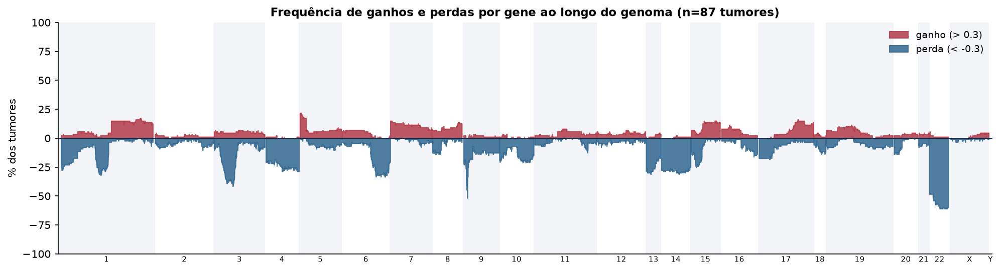
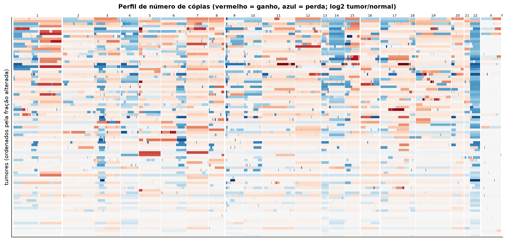
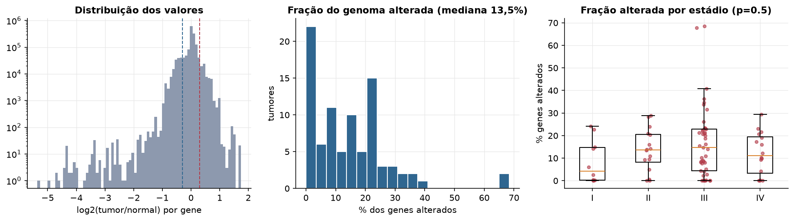
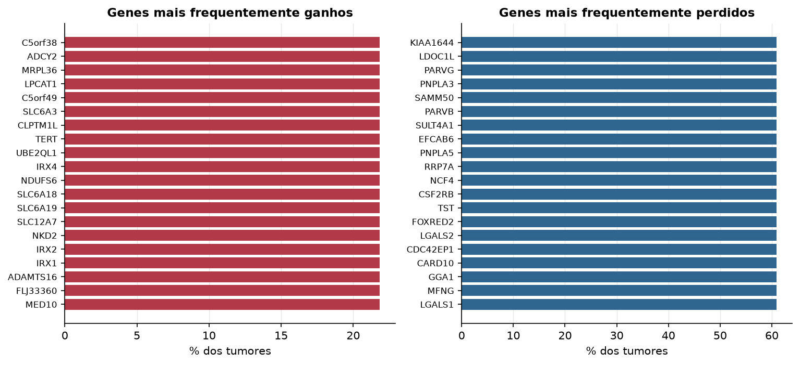

MESO · Número de cópias (CNV)
Affymetrix SNP6, segmentos whitelisted do PanCanAtlas · gerado em 22/10/2026 02:01
87tumores
17.738genes
13,5%fração alterada mediana
136segmentos/tumor (mediana)
Fonte: SNP6 whitelisted (PanCanAtlas); nível de gene calculado dos segmentos (hg19)
O valor por gene é o do segmento que cobre o meio do gene (log2 tumor/normal, hg19). Sem correção de pureza e ploidia: tumores com pouca célula tumoral têm valores atenuados. Para chamadas discretas (−2 a 2), use o GISTIC2 do PanCanAtlas ou o ABSOLUTE.
Principais resultados
- Mediana de 13,5% dos genes com ganho ou perda por tumor (limiares log2 de 0.3 e -0.3).
- O cromossomo com mais ganhos em média é o 7 (11,1% dos tumores por gene) e o com mais perdas é o 22 (51,1%).
- Genes mais ganhos: C5orf38 (22%), ADCY2 (22%), MRPL36 (22%), LPCAT1 (22%), C5orf49 (22%), SLC6A3 (22%). Genes mais perdidos: KIAA1644 (61%), LDOC1L (61%), PARVG (61%), PNPLA3 (61%), SAMM50 (61%), PARVB (61%).
- Fração alterada por estádio: Kruskal-Wallis p=0.5.
Paisagem ao longo do genoma


Carga de alterações

Genes recorrentes

Top 25 genes por frequência de ganho
| gene | chrom | % ganho | % perda | média log2 |
|---|---|---|---|---|
| C5orf38 | 5 | 21.8 | 0 | 0.171 |
| ADCY2 | 5 | 21.8 | 0 | 0.169 |
| MRPL36 | 5 | 21.8 | 0 | 0.171 |
| LPCAT1 | 5 | 21.8 | 0 | 0.171 |
| C5orf49 | 5 | 21.8 | 0 | 0.169 |
| SLC6A3 | 5 | 21.8 | 0 | 0.171 |
| CLPTM1L | 5 | 21.8 | 0 | 0.171 |
| TERT | 5 | 21.8 | 0 | 0.171 |
| UBE2QL1 | 5 | 21.8 | 0 | 0.168 |
| IRX4 | 5 | 21.8 | 0 | 0.171 |
| NDUFS6 | 5 | 21.8 | 0 | 0.171 |
| SLC6A18 | 5 | 21.8 | 0 | 0.171 |
| SLC6A19 | 5 | 21.8 | 0 | 0.171 |
| SLC12A7 | 5 | 21.8 | 0 | 0.171 |
| NKD2 | 5 | 21.8 | 0 | 0.171 |
| IRX2 | 5 | 21.8 | 0 | 0.171 |
| IRX1 | 5 | 21.8 | 0 | 0.171 |
| ADAMTS16 | 5 | 21.8 | 0 | 0.171 |
| FLJ33360 | 5 | 21.8 | 1.1 | 0.162 |
| MED10 | 5 | 21.8 | 0 | 0.168 |
| NSUN2 | 5 | 21.8 | 0 | 0.168 |
| SRD5A1 | 5 | 21.8 | 0 | 0.168 |
| PAPD7 | 5 | 21.8 | 0 | 0.168 |
| FASTKD3 | 5 | 21.8 | 0 | 0.169 |
| CTNND2 | 5 | 20.7 | 1.1 | 0.161 |
Top 25 genes por frequência de perda
| gene | chrom | % ganho | % perda | média log2 |
|---|---|---|---|---|
| KIAA1644 | 22 | 1.1 | 60.9 | -0.361 |
| LDOC1L | 22 | 1.1 | 60.9 | -0.362 |
| PARVG | 22 | 1.1 | 60.9 | -0.361 |
| PNPLA3 | 22 | 1.1 | 60.9 | -0.361 |
| SAMM50 | 22 | 1.1 | 60.9 | -0.361 |
| PARVB | 22 | 1.1 | 60.9 | -0.361 |
| SULT4A1 | 22 | 1.1 | 60.9 | -0.361 |
| EFCAB6 | 22 | 1.1 | 60.9 | -0.36 |
| PNPLA5 | 22 | 1.1 | 60.9 | -0.361 |
| RRP7A | 22 | 1.1 | 60.9 | -0.36 |
| NCF4 | 22 | 1.1 | 60.9 | -0.356 |
| CSF2RB | 22 | 1.1 | 60.9 | -0.356 |
| TST | 22 | 1.1 | 60.9 | -0.356 |
| FOXRED2 | 22 | 1.1 | 60.9 | -0.356 |
| LGALS2 | 22 | 1.1 | 60.9 | -0.355 |
| CDC42EP1 | 22 | 1.1 | 60.9 | -0.355 |
| CARD10 | 22 | 1.1 | 60.9 | -0.355 |
| GGA1 | 22 | 1.1 | 60.9 | -0.355 |
| MFNG | 22 | 1.1 | 60.9 | -0.355 |
| LGALS1 | 22 | 1.1 | 60.9 | -0.355 |
| PDXP | 22 | 1.1 | 60.9 | -0.355 |
| MPST | 22 | 1.1 | 60.9 | -0.356 |
| CACNG2 | 22 | 1.1 | 60.9 | -0.356 |
| EIF3D | 22 | 1.1 | 60.9 | -0.356 |
| SH3BP1 | 22 | 1.1 | 60.9 | -0.355 |